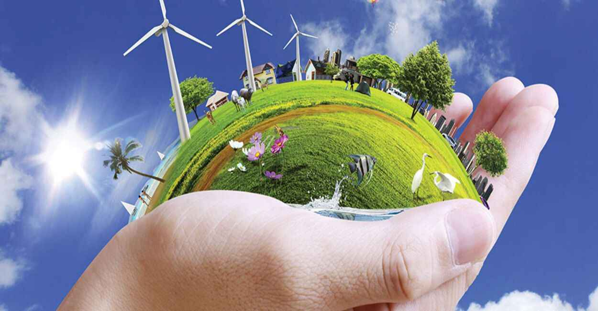
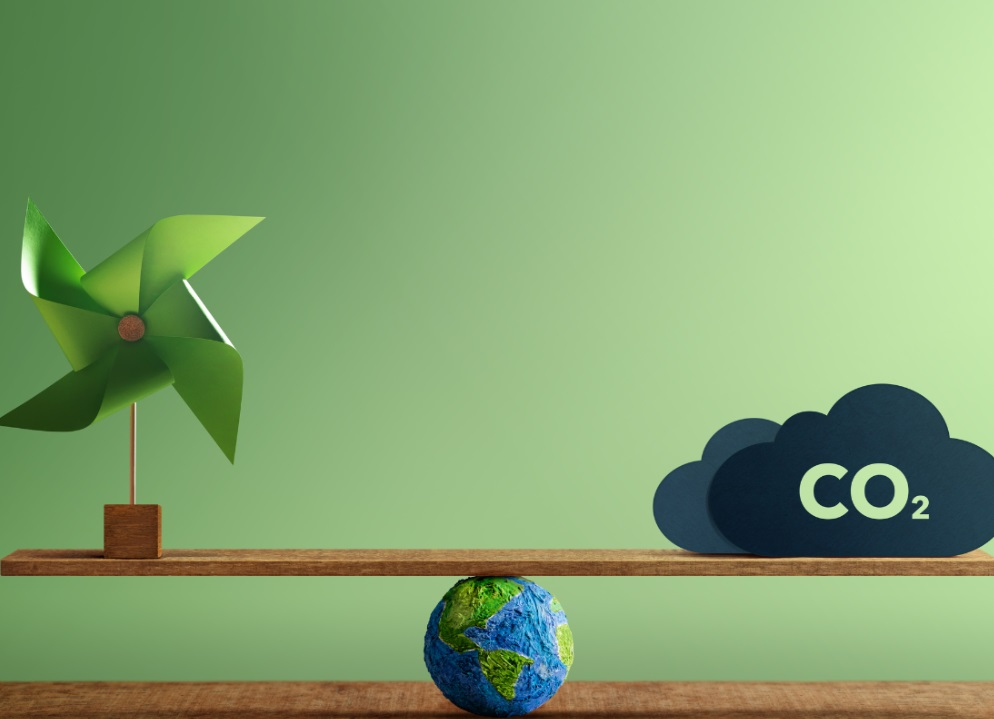
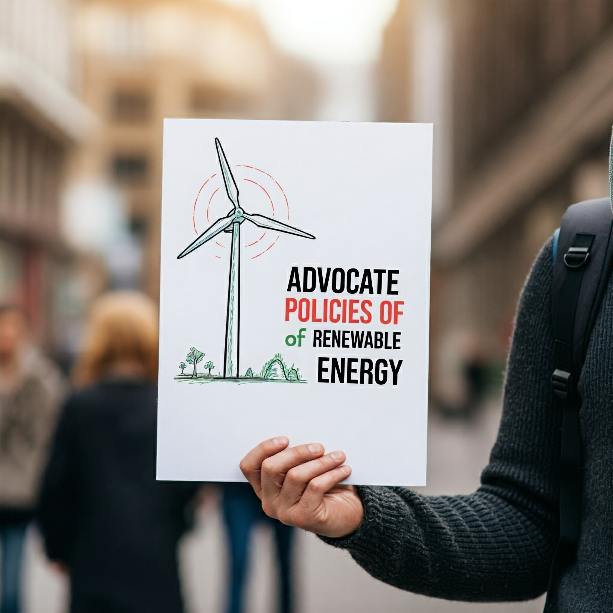

Learn More
Explore educational resources and learn more about the benefits of renewable energy. The more you know, the more you can help spread awareness and inspire others to take action.
Here are some helpful resources:
Support Renewable Energy Initiatives
Support organizations and projects that are working to advance renewable energy adoption. Consider donating or volunteering your time to help make a difference.
Here are some organizations you can support:
Make Sustainable Choices
Reduce your own carbon footprint by making sustainable choices in your daily life. Consider using energy-efficient appliances, reducing your energy consumption, and supporting businesses that use renewable energy.
Here are some tips for making sustainable choices:
- Use energy-efficient appliances and light bulbs
- Reduce your energy consumption by turning off lights and unplugging devices when not in use
- Choose renewable energy options for your home or business
- Support businesses that use renewable energy
- Reduce, reuse, and recycle
Advocate for Renewable Energy Policies
Contact your elected officials and advocate for policies that support renewable energy development and deployment. Your voice can make a difference in shaping a sustainable energy future.
Here's how to get involved in advocacy:
- Write letters to your elected officials
- Attend public hearings and meetings
- Join or support advocacy organizations
- Spread awareness on social media